Section 1.5 Trigonometric Functions of Any Angles
Now that we have been introduced to the six trigonometric functions for special angles in the first quadrant, we can begin to examine their properties for all quadrants.
Subsection 1.5.1 Determine the Signs of the Trigonometric Functions Based on its Quadrant
Let \(P(x,y)\) be a point on the circle. The signs of the six trigonometric functions vary depending on the quadrant \(P(x,y)\) lies in.
Example 1.5.1.
Let \(P(x,y)\) is in Quadrant II. Determine the signs for each of the six trigonometric functions.
Since we are in Quadrant II, \(x\lt 0\) and \(y>0\text{.}\) Note that \(r>0\text{.}\) Then we have
You can check the remaining quadrants using a similar fashion. Table 1.5.2 and Figure 1.5.3 lists the signs of the six trigonometric functions for each quadrant.
| Quadrant | Positive Functions | Negative Functions |
| I | all | none |
| II | sin, csc | cos, sec, tan, cot |
| III | tan, cot | sin, csc, cos, sec |
| IV | cos, sec | sin, csc, tan, cot |
Example 1.5.4.
If \(\sin\theta\lt 0\) and \(\cos\theta>0\text{,}\) what quadrant does \(\theta\) lie in?
Since \(\sin\theta\lt 0\text{,}\) then \(\theta\) is either in Quadrant III or IV. However, we also have \(\cos\theta>0\) which means that \(\theta\) is either in Quadrant I or IV. Thus the only quadrant that satisfied both conditions is Quadrant IV.
Mnemonic devices for remembering the quadrants in which the trigonometric functions are positive are
“A Smart Trig Class”
“All Students Take Calculus”
which correspond to “All Sin Tan Cos.”

Example 1.5.5.
Let \(\sin\theta=-\frac{12}{13}\) and \(\cos\theta=-\frac{5}{13}\text{.}\) Compute the exact values of the remaining trigonometric functions of \(\theta\) using identities.
Since \(\sin\theta\lt 0\) and \(\cos\theta\lt 0\text{,}\) we refer to Table 1.5.2 and see that \(\theta\) is in Quadrant III. From Table 1.5.2 we know \(\tan\theta>0\text{,}\) \(\csc\theta\lt 0\text{,}\) \(\sec\theta\lt 0\text{,}\) \(\cot\theta>0\text{.}\) From the quotient identity, we have
Next, using the reciprocal identities we get
Subsection 1.5.2 Reference Angles
Now that we can determine the signs of the trigonometric functions, we will show how the value of any trigonometric function at any angle can found from its value in Quadrant I (between \(0^{\circ}\) and \(90^{\circ}\) or 0 and \(\frac{\pi}{2}\)).
Definition 1.5.6.
Let \(t\) be a real number. A reference angle, \(t'\text{,}\) is the acute angle (\(\lt 90^{\circ}\)) formed by the terminal side of angle \(t\) and the \(x\)-axis. In other words, it is the shortest distance along the unit circle measured between the terminal side and the \(x\)-axis. Angles in Quadrant I are their own reference angle.
\begin{mybox}[Calculating the reference angle] Given an angle \(t\text{,}\) to calculate the reference angle \(t'\)
In radians, if \(t>2\pi\) or if \(t\lt 0\) then add or subtract multiples of \(2\pi\) to obtain a coterminal angle between \(0\) and \(2\pi\) and then find the reference angle.
In degrees, if \(t>360^{\circ}\) or \(t\lt 0^{\circ}\) then add or subtract multiples of \(360^{\circ}\) to obtain a coterminal angle between \(0^{\circ}\) and \(360^{\circ}\) and then find the reference angle.
Quadrant I
\(t'=t\)
Quadrant II
\(t'=\pi-t\)
\(t'=180^{\circ}-t\)
Quadrant III
\(t'=t-\pi\)
\(t'=t-180^{\circ}\)
Quadrant IV
\(t'=2\pi-t\)
\(t'=360^{\circ}-t\)
\end{mybox}
Example 1.5.7.
Find the reference angle for each value of \(t\)
\(t=\frac{\pi}{3}\)
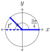\(t=\frac{3\pi}{4}\)
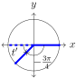\columnbreak\(t=-\frac{3\pi}{4}\)
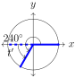\(t=240^{\circ}\)
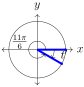\(t=\frac{11\pi}{6}\)
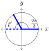\(t=\frac{2\pi}{3}\)
The angle \(t=\frac{\pi}{3}\) is in the first quadrant and so it is its own reference angle: \(t=t'=\frac{\pi}{3}\)
From the figure we see the shortest distance to the \(x\)-axis is towards \(\pi\text{.}\) We see that \(t'+\frac{3\pi}{4}=\pi\) so \(t'=\pi-\frac{3\pi}{4}=\frac{\pi}{4}\text{.}\)
Since \(-\frac{3\pi}{4}\) goes counterclockwise and spans only two quadrants, we treat this similar to if we had an angle in Quadrant II. By the previous problem, \(t'+\frac{3\pi}{4}=\pi\) so \(t'=\pi-\frac{3\pi}{4}=\frac{\pi}{4}\text{.}\)
From the figure we see the shortest distance to the \(x\)-axis is towards \(180^{\circ}\text{.}\) We see that \(240^{\circ}-t'=180^{\circ}\) so \(t'=240^{\circ}-180^{\circ}=60^{\circ}\)
From the figure we see the shortest distance to the \(x\)-axis is towards \(2\pi\text{.}\) We see that \(t'+\frac{11\pi}{6}=2\pi\) so \(t'=2\pi-\frac{11\pi}{6}=\frac{\pi}{6}\text{.}\)
From the figure we see the shortest distance to the \(x\)-axis is towards \(\pi\text{.}\) We see that \(t'+\frac{2\pi}{3}=\pi\) so \(t'=\pi-\frac{2\pi}{3}=\frac{\pi}{3}\text{.}\)
\begin{mybox}[Calculate an angle in standard position given its quadrant and reference angle] To calculate an angle in standard position, \(t\text{,}\) given the quadrant that \(t\) lies in and the reference angle \(t'\text{,}\)
Quadrant I
\(t=t'\)
Quadrant II
\(t=\pi-t'\)
\(t=180^{\circ}-t'\)
Quadrant III
\(t=\pi+t'\)
\(t=180^{\circ}+t'\)
Quadrant IV
\(t=2\pi-t'\)
\(t=360^{\circ}-t'\)
For radians only: If the reference angle (in radians) is of the form \(t'=\frac{a\pi}{b}\text{,}\) then the associated angle in standard position, \(t\text{,}\) can be calculated by
\end{mybox}
Example 1.5.8.
Given a reference angle, \(t'\text{,}\) compute the associated angle in standard position for Quadrant II, III, and IV.
\(\displaystyle t'=\frac{\pi}{6}\)
\(\displaystyle t'=45^{\circ}\)
-
In Quadrant II, the associated angle is \(t=\pi-\frac{\pi}{6}=\frac{6\pi}{6}-\frac{\pi}{6}=\frac{5\pi}{6}\) Alternative solution: Since \(t'=\frac{\pi}{6}=\frac{1\pi}{6}\text{,}\) then \(t'=\frac{(6-1)\pi}{6}=\frac{5\pi}{6}\)
In Quadrant III, the associated angle is \(t=\pi+\frac{\pi}{6}=\frac{6\pi}{6}+\frac{\pi}{6}=\frac{7\pi}{6}\) Alternative solution: \(t'=\frac{(6+1)\pi}{6}=\frac{7\pi}{6}\)
In Quadrant IV, the associated angle is \(t=2\pi-\frac{\pi}{6}=\frac{12\pi}{6}-\frac{\pi}{6}=\frac{11\pi}{6}\) Alternative solution: \(t'=\frac{(2\cdot6-1)\pi}{6}=\frac{11\pi}{6}\)
Quadrant I
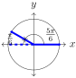Quadrant II
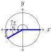Quadrant III
Quadrant IV
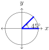 -
In Quadrant II, the associated angle is \(t=180^{\circ}-45^{\circ}=135^{\circ}\)
In Quadrant III, the associated angle is \(t=180^{\circ}+45^{\circ}=225^{\circ}\)
In Quadrant III, the associated angle is \(t=360^{\circ}-45^{\circ}=315^{\circ}\)
Quadrant I
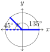Quadrant II
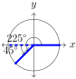Quadrant III
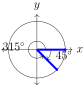Quadrant IV
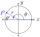
Subsection 1.5.3 Evaluating Trigonometric Functions Using Reference Angles
To evaluate trigonometric functions in any quadrant using reference angles, we begin with an angle, \(\theta\text{,}\) that lies in Quadrant II. Suppose we want to evaluate \(\sin\theta\) and \(\cos\theta\text{.}\) First, we draw \(\theta\) in standard position, then we determine and draw its reference angle, \(\theta'\text{.}\)
By definition we know that
Next, we draw the reference angle, \(\theta'\) in standard position
We now have
Notice that the \(y\)-coordinates for \(P\) and \(P'\) share the same value, thus \(y=y'\) and we get
Similarly, we can see that the \(x\)-coordinates of \(P\) and \(P'\) have opposite values, thus \(x=-x'\) and
You may have noticed that we have two similar triangles with the only difference being that the \(x\)-coordinates have opposite values. Therefore, the values of each trigonometric function for the two triangles will be the same, except possibly for a difference in signs. We can determine the sign of each function by referring to Table 1.5.2. This method can be applied to all quadrants. We now summarize the steps for using reference angles to evaluate trigonometric functions.
\begin{mybox}[Steps for Evaluating Trigonometric Functions Using Reference Angles] The values of a trigonometric function for a given angle are the same as the values of the same trigonometric function for the reference angle, except possibly for a difference in the sign. To calculate the value of a trigonometric function given any angle use the following steps
Draw the angle in standard position
Determine the reference angle associated with the angle
Evaluate the trigonometric function at the reference angle
Use Table 1.5.2 and the quadrant of the original angle to determine the appropriate sign for the function
\end{mybox}
Example 1.5.9.
Use the reference angle associated with the given angle to find the exact value of
\(\displaystyle \cos210^{\circ}\)
\(\displaystyle \tan\frac{7\pi}{4}\)
We will use the steps for evaluating trigonometric functions using reference angles.
-
Step 1.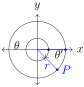
-
Step 2.
The reference angle is
\begin{equation*} \theta'=210^{\circ}-180^{\circ}=30^{\circ} \end{equation*} -
Step 3.
\(\displaystyle \cos30^{\circ}=\frac{\sqrt{3}}{2}\)
-
Step 4.
Since \(210^{\circ}\) lies in Quadrant III, we know that \(\cos\theta\lt 0\text{,}\) so
\begin{equation*} \cos210^{\circ}=-\frac{\sqrt{3}}{2} \end{equation*}
-
Step 1.
-
Step 1.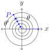
-
Step 2.
The reference angle is
\begin{equation*} 2\pi-\frac{7\pi}{4}=\frac{8\pi}{4}-\frac{7\pi}{4}=\frac{\pi}{4} \end{equation*} -
Step 3.
\(\displaystyle \tan\frac{\pi}{4}=1\)
-
Step 4.
Since \(\frac{7\pi}{4}\) lies in Quadrant IV, we know that \(\tan\theta\lt 0\text{,}\) so
\begin{equation*} \tan\frac{7\pi}{4}=-1 \end{equation*}
-
Step 1.
Example 1.5.10.
Calculate \(\sin\theta\) and \(\cos\theta\) if \(\theta=\frac{20\pi}{3}\)
-
Step 1.
Figure 1.5.11. The angle \(\theta=\frac{20\pi}{3}\) makes three rotations before ending in Quadrant II. -
Step 2.
To obtain the reference angle, we first subtract multiples of \(2\pi\) from \(\theta\) to obtain a coterminal angle between \(0\) and \(2\pi\text{:}\)
\begin{align*} \frac{20\pi}{3}-2\pi\amp =\amp \frac{20\pi}{3}-\frac{6\pi}{3}=\frac{14\pi}{3}\\ \frac{20\pi}{3}-4\pi\amp =\amp \frac{20\pi}{3}-\frac{12\pi}{3}=\frac{8\pi}{3}\\ \frac{20\pi}{3}-6\pi\amp =\amp \frac{20\pi}{3}-\frac{18\pi}{3}=\frac{2\pi}{3} \end{align*}From Example 1.5.7, the reference angle for \(\frac{2\pi}{3}\) is \(\theta'=\frac{\pi}{3}\)
-
Step 3.
\(\sin\frac{\pi}{3}=\frac{\sqrt{3}}{2}\) and \(\cos\frac{\pi}{3}=\frac{1}{2}\)
-
Step 4.
Since \(\frac{20\pi}{3}\) lies in Quadrant II, we know that \(\sin\theta>0\) and \(\cos\theta\lt 0\text{,}\) so
\begin{equation*} \sin\frac{20\pi}{3}=\frac{\sqrt{3}}{2}; \qquad \cos\frac{20\pi}{3}=-\frac{1}{2} \end{equation*}
Subsection 1.5.4 Periodic Functions
In Figure 1.5.11 of Example 1.5.10, the point \(P\) corresponds to the angle \(\frac{20\pi}{3}\text{.}\) When finding the reference angle, we subtracted multiples of \(2\pi\text{.}\) Each multiple of \(2\pi\) traces the unit circle back to the point \(P\text{,}\) giving us a coterminal angle. Therefore
Rewriting the angles we get
Similarly,
In general, let \(\theta\text{,}\) measured in radians, be any angle and let point \(P\) be the corresponding point on the unit circle. Adding or subtracting integer multiples of \(2\pi\) to \(\theta\) will result in a corresponding point on the unit circle identical to point \(P\text{.}\) Thus, the values of sine and cosine for all angles corresponding to point \(P\) are equal. In other words \begin{mybox}[Periodic Properties]
where \(k\) is any integer. \end{mybox} Functions like these that repeats its values in regular cycles are called periodic functions.
Definition 1.5.12.
A function \(f\) is called periodic if there exists a positive number \(p\) such that
for every \(\theta\text{.}\) The smallest number \(p\) is called the period of \(f\text{.}\)
Sine, cosine, cosecant, and secant repeat their values with a period of \(2\pi\) while tangent and cotangent have a period of \(\pi\text{.}\) \begin{mybox}[Periodic Properties]
\end{mybox}
Subsection 1.5.5 Trigonometric Table
The Trigonometric Identities and reference angles give us the values of trigonometric functions in Table 1.5.13.
| \(\theta\) (deg) | \(\theta\) (rad) | \(\sin\theta\) | \(\cos\theta\) | \(\tan\theta\) | \(\csc\theta\) | \(\sec\theta\) | \(\cot\theta\) |
| \(0^{\circ}\) | 0 | 0 | 1 | 0 | undefined | 1 | undefined |
| \(30^{\circ}\) | \(\dfrac{\pi}{6}\) | \(\dfrac{1}{2}\) | \(\dfrac{\sqrt{3}}{2}\) | \(\dfrac{\sqrt{3}}{3}\) | 2 | \(\dfrac{2\sqrt{3}}{3}\) | \(\sqrt{3}\) |
| \(45^{\circ}\) | \(\dfrac{\pi}{4}\) | \(\dfrac{\sqrt{2}}{2}\) | \(\dfrac{\sqrt{2}}{2}\) | 1 | \(\sqrt{2}\) | \(\sqrt{2}\) | 1 |
| \(60^{\circ}\) | \(\dfrac{\pi}{3}\) | \(\dfrac{\sqrt{3}}{2}\) | \(\dfrac{1}{2}\) | \(\sqrt{3}\) | \(\dfrac{2\sqrt{3}}{3}\) | 2 | \(\dfrac{\sqrt{3}}{3}\) |
| \(90^{\circ}\) | \(\dfrac{\pi}{2}\) | 1 | 0 | undefined | 1 | undefined | 0 |
| \(120^{\circ}\) | \(\dfrac{2\pi}{3}\) | \(\dfrac{\sqrt{3}}{2}\) | \(-\dfrac{1}{2}\) | \(-\sqrt{3}\) | \(\dfrac{2\sqrt{3}}{3}\) | \(-2\) | \(-\dfrac{\sqrt{3}}{3}\) |
| \(135^{\circ}\) | \(\dfrac{3\pi}{4}\) | \(\dfrac{\sqrt{2}}{2}\) | \(-\dfrac{\sqrt{2}}{2}\) | \(-1\) | \(\sqrt{2}\) | \(-\sqrt{2}\) | \(-1\) |
| \(150^{\circ}\) | \(\dfrac{5\pi}{6}\) | \(\dfrac{1}{2}\) | \(-\dfrac{\sqrt{3}}{2}\) | \(-\dfrac{\sqrt{3}}{3}\) | 2 | \(-\dfrac{2\sqrt{3}}{3}\) | \(-\sqrt{3}\) |
| \(180^{\circ}\) | \(\pi\) | 0 | \(-1\) | 0 | undefined | \(-1\) | undefined |
| \(210^{\circ}\) | \(\dfrac{7\pi}{6}\) | \(-\dfrac{1}{2}\) | \(-\dfrac{\sqrt{3}}{2}\) | \(\dfrac{\sqrt{3}}{3}\) | \(-2\) | \(-\dfrac{2\sqrt{3}}{3}\) | \(\sqrt{3}\) |
| \(225^{\circ}\) | \(\dfrac{5\pi}{4}\) | \(-\dfrac{\sqrt{2}}{2}\) | \(-\dfrac{\sqrt{2}}{2}\) | 1 | \(-\sqrt{2}\) | \(-\sqrt{2}\) | 1 |
| \(240^{\circ}\) | \(\dfrac{4\pi}{3}\) | \(-\dfrac{\sqrt{3}}{2}\) | \(-\dfrac{1}{2}\) | \(\sqrt{3}\) | \(-\dfrac{2\sqrt{3}}{3}\) | \(-2\) | \(\dfrac{\sqrt{3}}{3}\) |
| \(270^{\circ}\) | \(\dfrac{3\pi}{2}\) | \(-1\) | 0 | undefined | \(-1\) | undefined | 0 |
| \(300^{\circ}\) | \(\dfrac{5\pi}{3}\) | \(-\dfrac{\sqrt{3}}{2}\) | \(\dfrac{1}{2}\) | \(-\sqrt{3}\) | \(-\dfrac{2\sqrt{3}}{3}\) | 2 | \(-\dfrac{\sqrt{3}}{3}\) |
| \(315^{\circ}\) | \(\dfrac{7\pi}{4}\) | \(-\dfrac{\sqrt{2}}{2}\) | \(\dfrac{\sqrt{2}}{2}\) | \(-1\) | \(-\sqrt{2}\) | \(\sqrt{2}\) | \(-1\) |
| \(330^{\circ}\) | \(\dfrac{11\pi}{6}\) | \(-\dfrac{1}{2}\) | \(\dfrac{\sqrt{3}}{2}\) | \(-\dfrac{\sqrt{3}}{3}\) | \(-2\) | \(\dfrac{2\sqrt{3}}{3}\) | \(-\sqrt{3}\) |
\begin{mybox}[Table Made Easy] Table 1.5.13 may seem intimidating but if you recognize the symmetry about \(90^{\circ}\text{,}\) \(180^{\circ}\text{,}\) and \(270^{\circ}\text{,}\) you will only need to memorize the values for the first quadrant (Table 1.4.3). In fact, you need only produce the values of sine in Quadrant I. Use the cofunction identities to find the values of cosine. Next, use the trigonometric identity to find \(\tan\theta=\sin\theta/\cos\theta\text{.}\) Finally, use the the reciprocal identities to produce \(\csc\theta\text{,}\) \(\sec\theta\text{,}\) and \(\cot\theta\text{.}\) \end{mybox}
Subsection 1.5.6 Pythagorean Identities
\begin{mybox}[Pythagorean Identities]
\(\displaystyle \sin^2\theta+\cos^2\theta=1\)
\(\displaystyle 1+\tan^2\theta=\sec^2\theta\)
\(\displaystyle 1+\cot^2\theta=\csc^2\theta\)
\end{mybox}
Proof.
We will use the Pythagorean Theorem to prove the reciprocal identities.
If the point \(P(x,y)\) is a point on the circle with radius \(r\text{,}\) then the formula for the circle is
By definition \(\frac{x}{r}=\cos\theta\) and \(\frac{y}{r}=\sin\theta\text{.}\) Thus we have
which is our first Pythagorean Identity. The proofs of the remaining identities are left as exercises.
Example 1.5.14.
Let \(\theta\) be an angle in Quadrant IV and let \(\cos\theta=\frac{3}{5}\text{.}\) Calculate the exact values of \(\sin\theta\) and \(\tan\theta\text{.}\)
Substituting our value of \(\cos\theta\) into the Pythagorean Identity,
Taking the square root of both sides,
Since \(\theta\) is in Quadrant II, we have \(\sin\theta\lt 0\text{.}\) Thus we choose the negative answer to get
Next we use the Quotient Identity to get
Subsection 1.5.7 Even and Odd Trigonometric Functions
Recall that a function \(f\) is even if \(f(-x)=f(x)\) for all values of \(x\text{,}\) and a function is odd if \(f(-x)=-f(x)\) for all values of \(x\text{.}\) We can now classify trigonometric functions as even or odd.
\begin{mybox}[Even and Odd Trigonometric Properties] The cosine and secant functions are even
The sine, cosecant, tangent, and cotangent functions are odd
\end{mybox}
Proof.
Let \(P\) be a point on the unit circle corresponding to the angle \(\theta\) with coordinates \((x,y)\) and \(Q\) be the point corresponding to the angle \(-\theta\) with coordinates \((x,-y)\text{.}\)
Using the Definition 1.3.3 for the six trigonometric functions we have
So
Thus we conclude that sine is an odd function and cosine is an even function. Next, using the Quotient and Reciprocal Identities we get
Thus tangent, cotangent, cosecant are odd functions and secant is an even function.
Example 1.5.15.
Use the even-odd properties of trigonometric functions to determine the exact value of
\(\displaystyle \csc(-30^{\circ})\)
\(\cos(-\theta)\) if \(\cos\theta=0.4\)
Since cosecant is an odd function, the cosecant of a negative angle is the opposite sign of the cosecant of the positive angle. Thus, \(\csc(-30^{\circ})=-\csc30^{\circ}=-2\)
Cosine is an even function so \(\cos(-\theta)=\cos\theta=0.4\text{.}\)
Checkpoint 1.5.16.
\begin{tasks} \task \(\cot\theta\lt 0\) and \(\cos\theta\lt 0\) \task \(\csc\theta>0\) and \(\tan\theta>0\) \task \(\cos\theta>0\) and \(\sin\theta\lt 0\) \task \(\sec\theta>0\) and \(\tan\theta>0\) \task \(\tan\theta\lt 0\) and \(\csc\theta>0\) \task \(\cot\theta>0\) and \(\sin\theta\lt 0\) \task \(\sec\theta\lt 0\) and \(\csc\theta\lt 0\) \task \(\cos\theta\lt 0\) and \(\tan\theta>0\) \end{tasks}
\Question The point \(P(x,y)\) is on the terminal side of angle \(\theta\text{.}\) Determine the exact values of the six trigonometric functions at \(\theta\)
\begin{tasks} \task
\task
\task \((3,-4)\) \task \((-12,-5)\) \task \((-2,-3)\) \task \((-4,4)\) \task \((-24,7)\) \task \((9,-40)\) \end{tasks}
\Question Find the exact value of the remaining five trigonometric functions of \(\theta\) from the given information.
\begin{tasks} \task \(\tan\theta=-\frac{12}{5}\text{,}\) \(\theta\) is Quadrant II \task \(\cos\theta=\frac{3}{5}\text{,}\) \(\theta\) is Quadrant IV \task \(\csc\theta=\frac{\sqrt{10}}{2}\text{,}\) \(\theta\) is Quadrant II \task \(\cos\theta=-\frac{5}{8}\text{,}\) \(\theta\) is Quadrant III \task \(\sec\theta=-2\text{,}\) \(\pi\lt \theta\lt \frac{3\pi}{2}\) \task \(\cot\theta=-\frac{5}{3}\text{,}\) \(\frac{3\pi}{2}\lt \theta\lt 2\pi\) \task \(\cos\theta=\frac{2}{3}\text{,}\) \(0\lt \theta\lt \pi\) \task \(\tan\theta=\frac{7}{4}\text{,}\) \(0\lt \theta\lt \frac{\pi}{2}\) \task \(\csc\theta=\frac{3}{2}\text{,}\) \(\tan\theta\lt 0\) \task \(\sin\theta=\frac{5}{6}\text{,}\) \(\cot\theta>0\) \task \(\sin\theta=-\frac{15}{17}\text{,}\) \(\cos\theta\lt 0\) \task \(\cot\theta=-\frac{1}{3}\text{,}\) \(\sin\theta>0\) \end{tasks}
\Question Calculate the reference angle...
\Question Given a reference angle, \(t'\text{,}\) compute the associated angle in standard position for i) Quadrant II; ii) Quadrant III; and iii) Quadrant IV. \begin{tasks}(2) \task \(t'=\frac{\pi}{4}\) \task \(t'=\frac{\pi}{3}\) \task \(t'=30^{\circ}\) \task \(t'=60^{\circ}\) \end{tasks}
\Question Calculate the exact values of the six trigonometric functions for each angle, \(\theta\text{.}\) Hint: Use the reference angle that we found in Example reference angles
\(\displaystyle \theta=-\frac{3\pi}{4}\)
\(\displaystyle \theta=\frac{4\pi}{3}\)
\(\displaystyle \theta=\frac{11\pi}{6}\)
\(\displaystyle \theta=120^{\circ}\)
\(\displaystyle \theta=\frac{7\pi}{3}\)
\(\displaystyle \theta=480^{\circ}\)
\Question Use reference angles to compute the exact value of sin(225) etc (maybe not necessary since we now have the trig table. Maybe phrase it given theta, I) find the reference angle, theta' ii) evaluate at the reference angle, sin(theta'), iii) use the reference angle and the quadrant to evaluate sin(theta)
\Question Use the fact that sine and cosine are periodic to find \(\sin1200^{\circ}\text{.}\)
\Question Prove the third Pythagorean Identity: \(1+\tan^2\theta=\sec^2\theta\text{.}\) Hint: Begin with \(\sin^2\theta+\cos^2\theta=1\) and divide both sides of the equation by \(\cos^2\theta\text{.}\)
\Question Prove the third Pythagorean Identity: \(1+\cot^2\theta+1=\csc^2\theta\text{.}\) Hint: Begin with \(\sin^2\theta+\cos^2\theta=1\) and divide both sides of the equation by \(\sin^2\theta\text{.}\)
\Question pythagorean identity questions
\Question Use the Pythagorean Identities to write the first trigonometric function of \(\theta\) in terms of the second function given the quadrant
\Question Use the even and odd properties to evaluate the following
\begin{tasks} \task \(\cos(-60^{\circ})\) \task \(\tan(-225^{\circ})\) \task \(\csc(-330^{\circ})\) \task \(\sin(-90^{\circ})\) \task \(\cot(-300^{\circ})\) \task \(\sec(-150^{\circ})\) \task \(\sin\left(-\frac{11\pi}{6}\right)\) \task \(\tan\left(-\frac{5\pi}{4}\right)\) \task \(\cos\left(-\frac{4\pi}{3}\right)\) \task \(\tan(-\pi)\) \task \(\sec\left(-\frac{\pi}{4}\right)\) \task \(\csc\left(-\frac{7\pi}{6}\right)\) \end{tasks}
\begin{Answer}[ref={ex-1.5}] \Question \begin{tasks}(4) \task QII \task QIII \task QIV \task QI \task QII \task QIII \task QIII \task QIII \end{tasks}
\Question \begin{tasks} \task \(\sin\theta=\text{,}\) \(\cos\theta=\text{,}\) \(\tan\theta=\text{,}\) \(\csc\theta=\text{,}\) \(\sec\theta=\text{,}\) \(\cot\theta=\) \end{tasks}
\Question
\Question
\Question
\Question
\Question
\Question \begin{tasks} \task \(\frac{1}{2}\) \task \(-1\) \task \(2\) \task \(-1\) \task \(\frac{\sqrt{3}}{3}\) \task \(-\frac{2\sqrt{3}}{3}\) \task \(\frac{1}{2}\) \task \(-1\) \task \(-\frac{1}{2}\) \task \(0\) \task \(\sqrt{2}\) \task \(2\) \end{tasks}
\end{Answer}